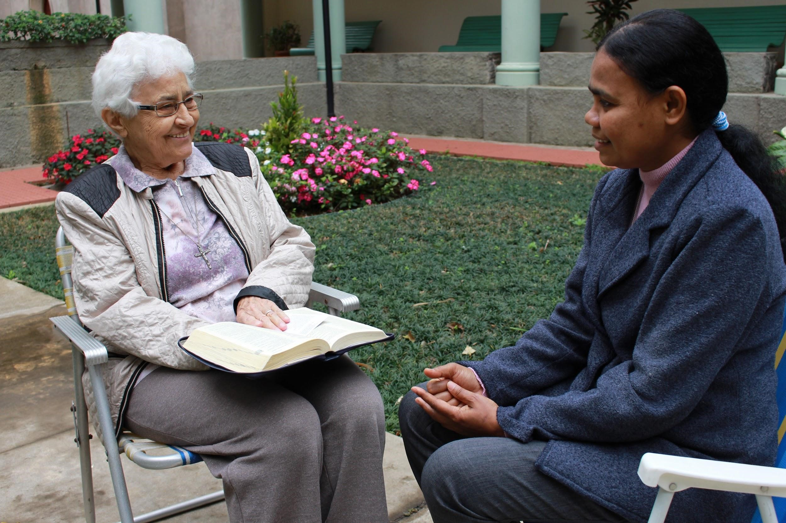

Uma vida consagrada ao povo da periferia
29 de Novembro de 2020
O itinerário vocacional e missionário de Ir. Monika Kopf é praticamente o mesmo da vida religiosa consagrada no Brasil, com os seus desafios, avanços e buscas, passando por momentos de profundas transformações.
Irmã Monika Kopf é de Aschach, um pequeno povoado da Baviera, na Alemanha. Nasceu em 1941, sendo a última de 14 filhos. Sua família participava de todas as atividades da igreja e sua mãe assinava revistas missionárias, entre elas a “Stadt Gottes” (Cidade de Deus) do Verbo Divino. Lendo as histórias missionárias Monika descobriu seu chamado vocacional e, aos 22 anos, entrou na Congregação Missionária das Servas do Espírito Santo e foi enviada ao Brasil em 1967, depois dos primeiros votos.
Ela conta que entrou no Convento depois do Concílio Vaticano II, numa época de muitas mudanças na Igreja e também no convento, o que provocava muita insegurança. A vida religiosa buscava uma nova maneira de viver, mais fiel às suas origens e Ir. Monika, ainda no noviciado, participou dessa renovação.
Ir. Monika chegou ao Brasil cheia de entusiasmo e queria logo conhecer a cultura brasileira e seus costumes, mas ficou decepcionada com o estilo de vida religiosa que encontrou, ainda muito voltado para costumes europeus. A mudança aconteceu graças aos apelos de D. Paulo Evaristo Arns, em São Paulo, que insistia que as congregações abrissem suas portas e enviassem as irmãs para a periferia da cidade para viver com o povo e ajudar na evangelização nas paróquias, conta.
Depois de muita insistência, Ir. Monika recebeu licença para trabalhar na Vila Remo, na zona sul de São Paulo. “O que mais me marcou foi a situação de pobreza do povo que, apesar disso, tinha força e garra para lutar por uma vida melhor”, conta a missionária. Na época, ela e as outras irmãs se reuniam nas famílias e faziam muitas reflexões bíblicas, estudavam com o povo os documentos da Igreja, de Medellín e Puebla , trabalhavam na formação de Comunidades Eclesiais de Base, as CEBs, pastorais sociais como os movimentos de reivindicação de escolas, água encanada, postos de saúde, construção e documentação das moradias, contra o custo de vida e Direitos Humanos.
Foi vivendo numa comunidade religiosa inserida num bairro da periferia que Ir. Monika descobriu a força das mulheres quando se unem para resistir e enfrentar problemas: “Descobri que a reflexão da Palavra de Deus realmente pode transportar montanhas”- afirma.
Ir. Monika conta que a partir dessa época a vida religiosa consagrada deu passos largos e quase todas as congregações se engajaram nas pastorais tanto nas cidades como no interior. “As irmãs viviam a vida do povo na simplicidade e humildade” e até o jeito de rezar mudou – “a oração passou a ser mais concreta a partir da realidade e sofrimento do povo no dia a dia”, lembra Ir. Monika.
Naquele tempo, essa maneira de viver nem sempre era compreendida, mas as irmãs da inserção de diversas congregações se reuniam para rezar juntas, refletir, discutir as dificuldades, se confraternizar e animar mutuamente”, tornando-se, na opinião de Ir. Monika, “um sinal profético”. Hoje, segundo ela, a vida religiosa “é bem mais aberta, a comunidade é mais leve e alegre e há muito mais liberdade para o desabrochamento pessoal”, explica.
Ir. Monika relata que as experiências vividas na inserção, nas pastorais e nos movimentos populares formaram sua maneira de ser e lhe ensinaram a trabalhar em equipe, o que muito a ajudou durante os seis anos em que prestou o serviço de Coordenadora Provincial e que buscou colaborar a partir de dentro da instituição.
Atualmente Ir. Monika pertence à Comunidade do Convento Santíssima Trindade e luta com a sua saúde fragilizada. Mesmo assim, com seus quase 80 anos, olha com esperança para o futuro da vida religiosa e aponta a importância de comunidades intercongregacionais e o trabalho conjunto com os leigos e leigas.
Já sem muitas ilusões de poder voltar às comunidades de inserção, Ir. Monika quer aproveitar o tempo que lhe resta da melhor forma possível e afirma: “o futuro a Deus pertence e, seja como for, estarei a serviço, pois consagrei minha vida a Deus, o que pede doação, dedicação e serviço aos irmãos e irmãs”.